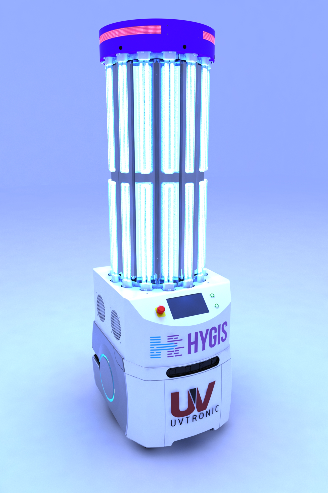
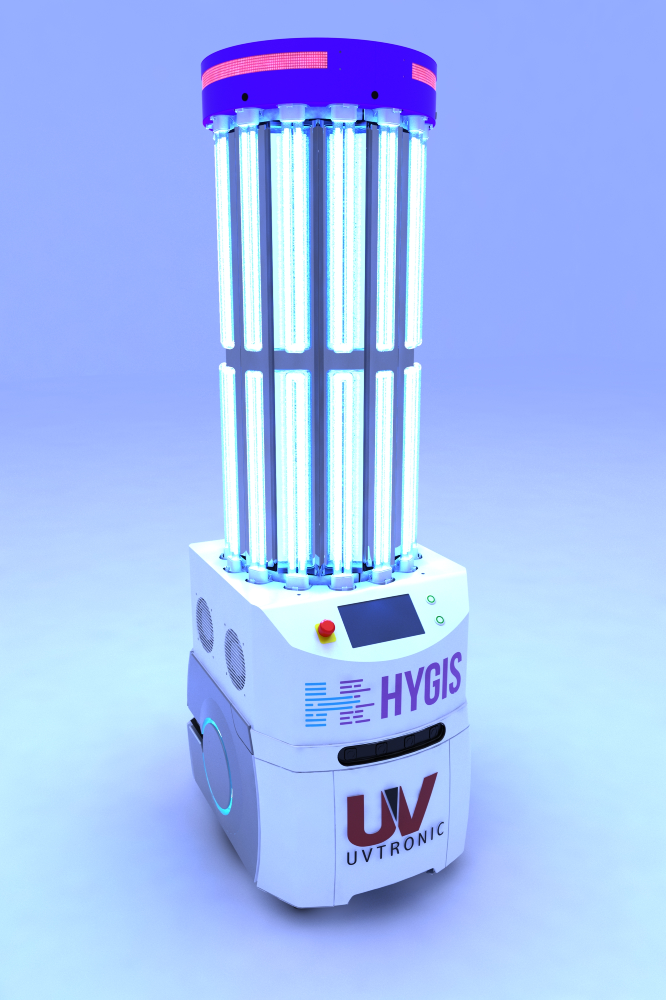

Technology Transfer & Standardization (ZF)
The Goal: Solve a critical downtime issue in a highly contaminated environment and establish a new industrial standard for UV curing processes.
My Role & Outcome: I engineered a novel UV LED curing system that significantly improved process reliability. The solution was so successful it was adopted as an industrial blueprint and replicated across three production lines over three years (2019-2021). This multi-year initiative required managing a complex technology transfer, including close collaboration and system integration with a German equipment supplier to ensure seamless deployment.


 
